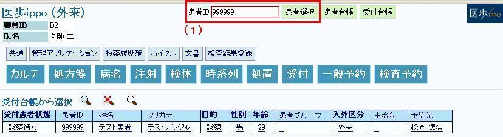
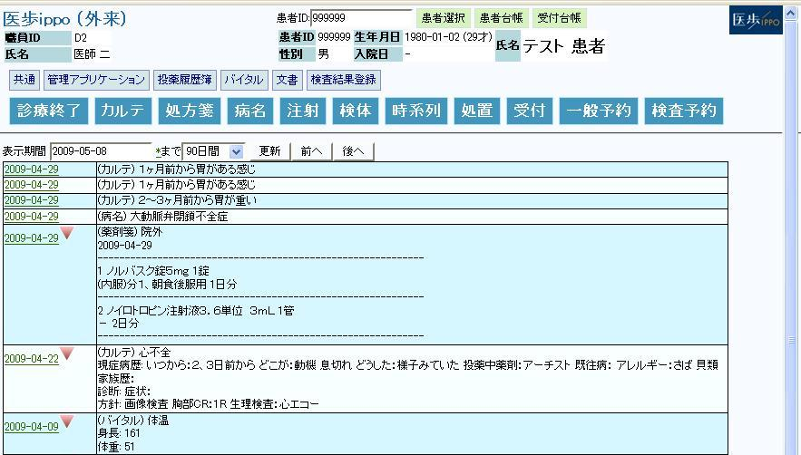
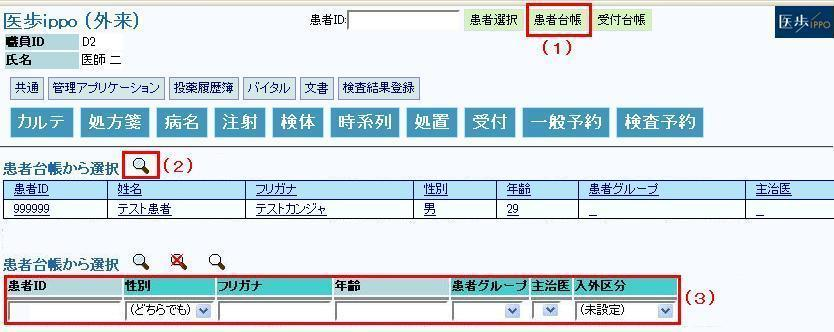
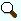
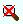
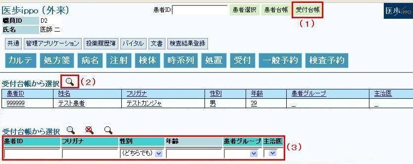

２ 患者選択
２－１ 患者IDから直接選択
（１） 患者IDを入力後患者選択ボタンクリックし患者様を選択します

（２） 選択した患者様の診療行為履歴が表示されます

２－２ 検索して選択
（１） 患者台帳ボタンをクリックします

（２） 絞込み検索アイコン
をクリックします。
（３） テキストボックスとプルダウン(性別・入外区分)に検索したい患者様の情報を入力して検索アイコンをクリックします。
検索条件に該当する患者様が表示されます。
※ 検索条件をクリアする場合は検索条件クリアアイコンをクリックして下さい
※ 選択を終了する場合は検索解除アイコンをクリックして下さい
（４） 検索結果リストから診療したい患者様をクリックします
選択した患者様の診療行為履歴が表示されます
２－３ 受付台帳から検索
（１） 受付台帳ボタンをクリックします

（２）
絞込み検索アイコン
をクリックします。
（３） テキストボックスとプルダウン(性別)に検索したい患者様の情報を入力して検索アイコンをクリックします。
検索条件に該当する患者様が表示されます。
※ 検索条件をクリアする場合は検索条件クリアアイコンをクリックして下さい
※ 選択を終了する場合は検索解除アイコンをクリックして下さい
（４） 表示されたリストから診療したい患者様をクリックします
選択した患者様の診療行為履歴が表示されます